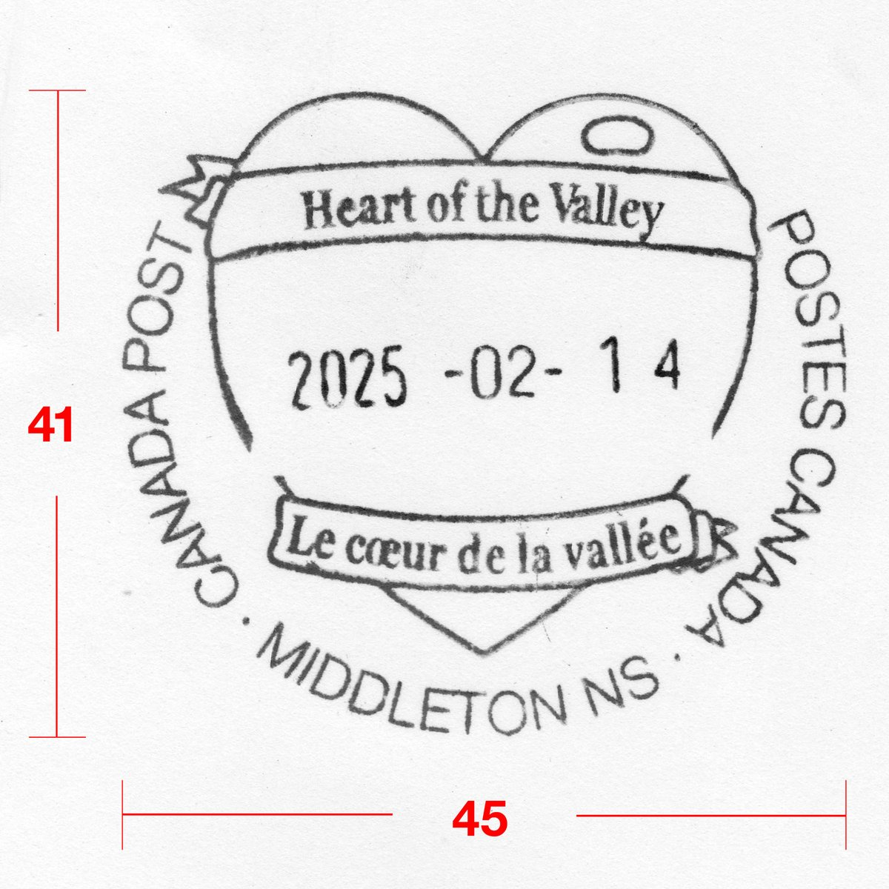

Middleton PO pictorial cancel
Heart of the Valley · 2021
- Status
- Active
- Run dates
- 2021-01-01 to 2032-12-31
- Design
- "Heart of the Valley"; heart shape
- Ink colour
- Black
- Designer
- Unknown
- Post office
- Middleton PO
275 Main Street
Middleton, NS
B0S 1P0 - Subjects
- heart
Collect it by mail. Send your stamped covers, with a stamped return envelope, to the post office address above. How to collect pictorial cancels by mail · en français
 Middleton PO2012
Middleton PO2012 Middleton PO2011
Middleton PO2011 Aylesford POCRANBERRY Capital of Nova Scotia
Aylesford POCRANBERRY Capital of Nova Scotia Berwick POApple
Berwick POApple Annapolis Royal POLa Maison acadienne
Annapolis Royal POLa Maison acadienne Barss Corner POBarss Corner post office, trees, cow, horse
Barss Corner POBarss Corner post office, trees, cow, horse